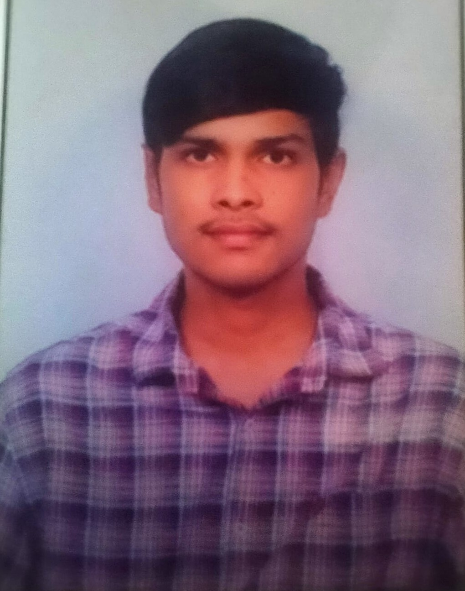

MY RESUME

KANTHETI YOGESH RAM
Plot No:936,Prgathi Nagar,Hyderabad
Phone no:9849460834
Email:yogeshram526@gmail.com
PROFILE:
I love taking lead on project and events.I was the one who brings everyone together
and make sure we hit our goals. I am even speciliased in creating user-friendly websites that are both interactive
and interaction.
LINKS:Linkedin ,LeetCode
EDUCATION:
| Class |
Name Of The Institution |
Year |
| Secondary Education |
Pragathi Central School |
2021 |
| Intermediate |
Sri Chaitanya jr kalasala |
2023 |
| Btech |
Malla Reddy(MR)Deemed to be University |
2027 |
SKILLS:
-
C programming
-
Python
-
Html,css,JS
-
CPP
-
Power BI
-
DSA problem solving
COURSES AND CERTIFICATIONS:
- C Programming,NPTEL
- C Python,NPTEL
- C Business English certification,GetGrad Global
- C Azure Ai Fundamentals,Microsoft
- C Data Analysis with python,Cognitive IBM
- C Microsoft Power Bi,Infosys SpringBoard
- C Chatbot using chatfuel,Coursera
INTERNSHIPS:
- Junior Developer, AimR Edu
-
Utilized Python with Numpy and Pandas to analyze large datasets,
applying statistical methods to extract meaningfull insights.
-
Content Writer,InAmigos Foundation
-
worked upon many creation on contents based upon many real life
experiences and had a very good connection between many people
with different mindsets.
-
Frontend Developer,Codtech IT solutions
-
Created many user-friendly and interesting websites using frontend technologies
like html,css,js, bootstrap for better interaction.
EXTRA-CURRICULAR ACTIVITIES
HOBBIES
- Travelling
- Outdoor sports
- listening music